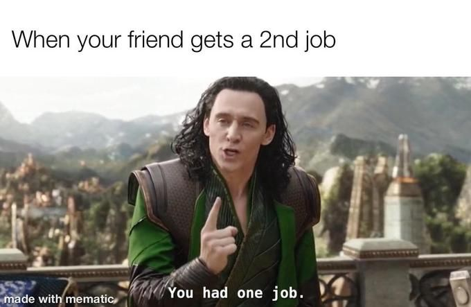

Ketergantungan Jejaring Sosial

Media sosial mengurangi waktu yang kita habiskan di dunia nyata.
Itu juga mengkondisikan pikiran kita untuk terus memperbarui berita dan postingan,
yang mungkin membuat stres dalam jangka panjang.
Bagaimana Kita Bisa Melawannya?
- Tetapkan batas waktu penggunaan media sosial setiap hari.
- Jadwalkan waktu bebas teknologi untuk istirahat dan bersantai.
- Habiskan waktu berkualitas dengan orang di dunia nyata.
🌤️ Cuaca Hari Ini 🌤️